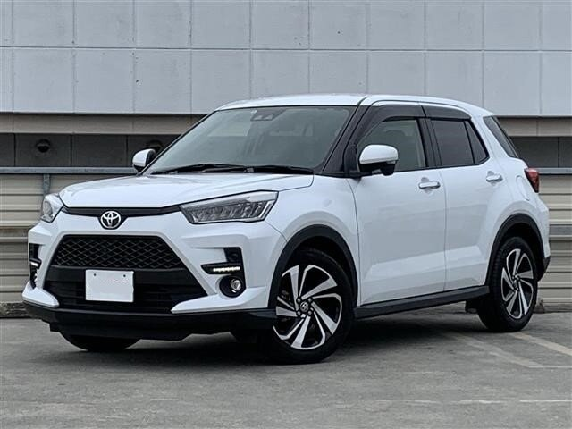
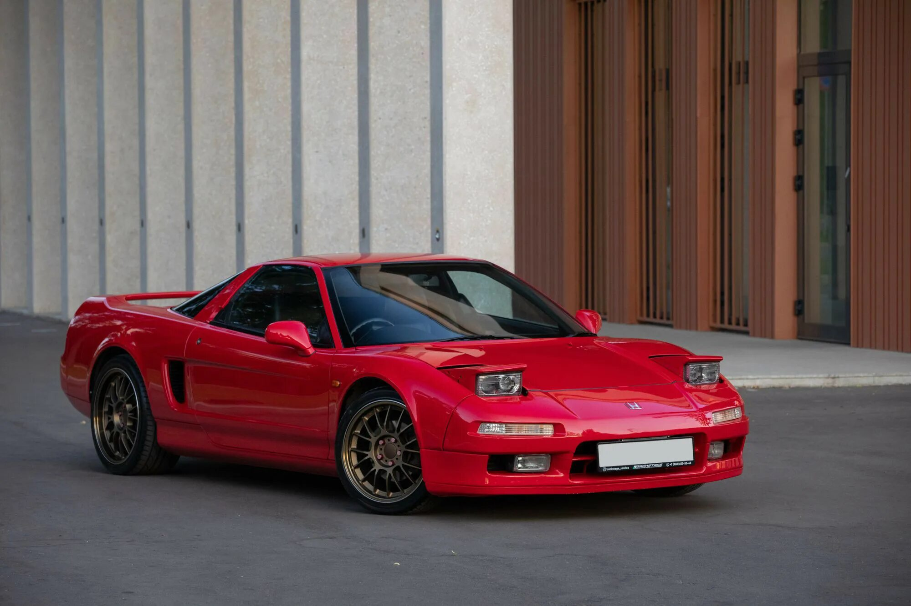
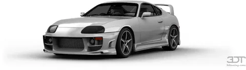
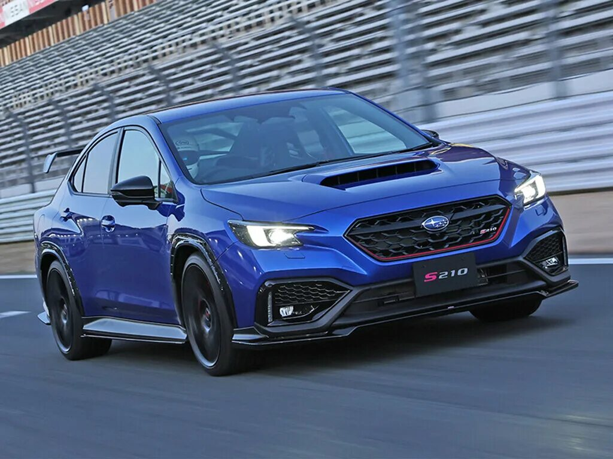

Toyota Supra — культовый японский спортивный автомобиль, выпускавшийся с 1978 по 2002 год, а затем возрожденный в 2019 году. Модель получила всемирную известность благодаря своим мощным двигателям серии JZ (особенно 2JZ-GTE) и огромному потенциалу для тюнинга. Supra стала символом эпохи японских спортивных машин 90-х годов.
Nissan Skyline GT-R, особенно модель R34, является легендой японского автопрома. Оснащенный системой полного привода ATTESA E-TS и двигателем RB26DETT, этот автомобиль доминировал на гоночных трассах. Прозвище "Годзилла" он получил за свою неукротимую мощь и устрашающий вид на дороге.